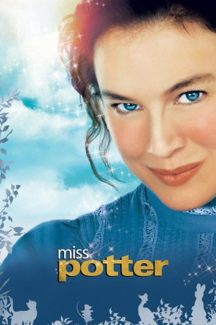

#3037 Die Zauberhafte Welt der Beatrix Potter
Alternativ: Miss Potter
 
 IMDB-Wertung: 7.0 / 10
IMDB-Wertung: 7.0 / 10  Metascore: 57
Metascore: 57 
“Miss Potter” ist einer Biographie über das Leben der Autorin Beatrix Potter. Sie war eine bekannte, englische Kinderbuchautorin, die sich auch stark im Naturschutz engagierte. Bücher ihrer bekanntesten Figur, Peter Hase, werden auch heute noch in aller Welt gerne gelesen. London, Anfang des 20. Jahrhunderts. Beatrix Potter (Renée Zellweger, “Bridget Jones”) – Mitte 30 – lebt immer noch in ihrem Elternhaus. Die leidenschaftliche Malerin und Autorin versucht schon seit langem, ihre Werke einer breiten Öffentlichkeit zugänglich zu machen, doch darüber hinaus vergisst sie zu leben. Sie hatte noch nie einen Freund, geschweige denn, dass sie eine Heirat in Aussicht hätte. Dies ändert sich allerdings, als der Verleger Norman Warne (Ewan McGregor, “Moulin Rouge”) sich erst für ihre Bücher, dann für sie selbst interessiert. Er scheint die große Liebe für Beatrix zu sein, doch ihre vornehme Familie sieht die Liaison gar nicht gerne.
Jahr: 2006
Dauer: 88 Minuten
FSK: 0
Land: England Studio: Planet Media Home EntertainmentTonspuren: DTS - ,
Untertitel:
Auflösung: 1080p (1920x800) Größe: 8704 MB
Genre: Drama, Liebe, Biographie
Regisseur: Chris Noonan
Drehbuch: Richard Maltby Jr.
Soundtrack: Nigel Westlake
Darsteller:
 Renée Zellweger als Beatrix Potter
Renée Zellweger als Beatrix Potter Ewan McGregor als Norman Warne
Ewan McGregor als Norman Warne Emily Watson als Millie Warne
Emily Watson als Millie Warne- Barbara Flynn als Helen Potter
- Bill Paterson als Rupert Potter
- Lloyd Owen als William Heelis
 Anton Lesser als Harold Warne
Anton Lesser als Harold Warne David Bamber als Fruing Warne
David Bamber als Fruing Warne Phyllida Law als Mrs. Warne
Phyllida Law als Mrs. Warne Lucy Boynton als Young Beatrix
Lucy Boynton als Young Beatrix- Justin McDonald als Young Heelis
- Lynn Farleigh als Lady Sybil
- John Woodvine als Sir Nigel
 Sarah Crowden als Lady Clifford
Sarah Crowden als Lady Clifford- Richard Mulholland als Ashton Clifford
- Barry McCormick als Bidder
- Matyelok Gibbs als Miss Wiggin
- Patricia Kerrigan als Fiona
- Oliver Jenkins als Young Bertram
- Judith Barker als Hilda
- Jennifer Castle als Jane
- Chris Middleton als Saunders
- Jane How als Lady Armitage
- Geoffrey Beevers als Mr. Copperthwaite
- Bridget McConnell als Lady Stokely
- Joseph Grieves als Lionel Stokely
- Clare Clifford als Mrs. Haddon-Bell
- Andy McSorley als Harry Haddon-Bell
- Marc Finn als Mr. Cannon
- Nicholas Hutchison als Meeting Chairman
- Mike Burnside als Man at Meeting
- Dominic Kemp als Auctioneer
- Avril Clark als Well Dressed Woman in Bookshop , uncredited
- Pam Rose als Lady , uncredited
- Andrew Sloey als Young Farmer , uncredited
Datei: X:\2006(N-Z)\Zauberhafte Welt der Beatrix Potter, Die (2006, FSK0, 1920x800).mkv seit 19.01.2016
Festplatte: HD 2005(G-Z)-2006(A-Z)
 Es gibt insgesamt 62 Filme in der Gruppe '2006(N-Z)'
Es gibt insgesamt 62 Filme in der Gruppe '2006(N-Z)'